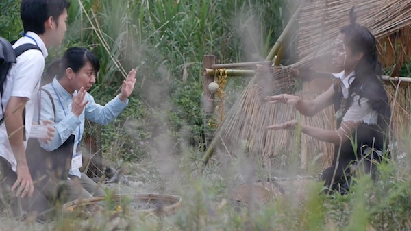
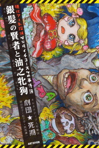

NEWS
2024.04.01:2024/12/26に開催したイベントCelebrate for ME のアーカイブWebを作りました。
Celebrate for ME Website 公式ウェブサイト
2019.12.25:
作品資料（日本語）コーナーを作りました。来年もよろしくお願いします。
https://photos.app.goo.gl/LDKd6KwokniFxcf96
2019.04.24:
★5月4日18:00〜TalkLive
西東京にて開催される展覧会「kitchen」期間中に、岡田裕子のTalkLiveがあります。
https://kitchen2019.amebaownd.com/pages/2749861/static
★5月4〜5日
Interdisciplinary Art Project Kobe 2019 vol.1 参加
神戸、元町映画館2階イベントルームで、オルタナティブ人形劇団「劇団★死期」森美術館会田誠展「天才でごめんなさい」にて行われた幻のパフォーマンスイベントを上映します。
再編集して再確認、怪作、名作！そして表現の自由について人形同士のバトルが熱い！！全編日本語字幕付！聴くの苦手な読みたい人もぜひ注目してください！
https://bit.ly/2XuYCrw
★7月10日よりミヅマアートギャラリー（東京）個展を予定しております。恵比寿映像祭（東京都写真美術館2019）で発表した話題の新作「エンゲージド・ボディ」
また、代表作である「俺の産んだ子」2019年改訂版を併せて発表。
これに際して初の作品集も刊行予定。
2018.03.16:
＜インターディシプリナリー・アート・フェスティバル・トウキョウ 17/18＞の展覧会「トランスペアレントネット」に参加します。
Interdisciplinary Art Festival Tokyo 17/18
「トランスペアレントネット」
‘Transparent Nets’
会期 Dates
2018年3月16日(金) ～ 25日(日) 10日間
March 16th (Fri.) – 25th (Sun.), 2018 [10-day Exhibition]
詳しくは公式サイトへ
http://i-a-f-t.net/iaft1617_day1/
2016.11.5:
オルタナティブ人形劇団「劇団★死期」が
Interdisciplinary Art Festival Tokyo 16/17「私たちの時代、時のタイポロジー」
Day 1に参加します。
2016年11月12日(土)
開場：18:50
映像上映プログラム「IAFT16/17 meets OSMOSIS fest part1」：19:00〜
アーティストトーク岡田裕子＋会田誠：20:30〜
料金：前売￥1800 当日￥2100
http://i-a-f-t.net/iaft1617_day1/
インタビュー動画：
https://youtu.be/gyHCmGZR6NA
会場：アップリンク
〒150-0042 東京都渋谷区宇田川町37-18 トツネビル1階
［JR渋谷駅ハチ公口から北西へ徒歩10分］
tel: 03-6825-5503
予約方法：
http://www.uplink.co.jp/event/2016/46250
more info：
http://i-a-f-t.net/
inquiry：
http://i-a-f-t.net/contact/
---UPLINK galleryでも関連展示がございます---
UPLINK gallery
2016年11月23日(水・祝)ー28日(月)
10:00〜22:00 入場無料
IAFT16/17参加作家の飯村隆彦、岡田裕子のインタビューやShengen Limのメディア・アート作品、ラサール芸術大学の学生映像作品、2016年8月にIAFTが参加した台湾・OSMOSIS festの記録を常時展示いたします。
2015.10.4:
2016年秋、岡田裕子の２つの展示のお知らせをいたします。
１０月７日〜１０月３０日
あざみ野コンテンポラリー vol.7
「悪い予感のかけらもないさ」展
横浜市民ギャラリーあざみ野 展示室1・2
入場無料
新作インスタレーション「カラダアヤトリ」を初公開いたします。
出品作家：岡田裕子／風間サチコ／金川晋吾／鈴木光／関川航平
http://artazamino.jp/event/azamino-contemporary-20161030/
１０月１日〜１１月６日
黄金町バザール２０１６「アジア的生活」
横浜黄金町、高架下スタジオ通路にてインスタレーション「Right to Dry」を展示しています。
多くのアーティストが参加、街を散策しながら美術に触れるアートイベント。
http://koganecho.net/koganecho-bazaar-2016/
☆１１月にはオルタナティブ人形劇団「劇団★死期」の初B級映画を上映する予定です。追って告知しますので宜しくお願い致します！
2015.8.4:
東京都現代美術館「おとなもこどもも考える ここはだれの場所？」に、“会田家（会田誠、岡田裕子、会田寅次郎）”として参加しています。
２０１５年７月１８日〜１０月１２日まで開催。
http://www.mot-art-museum.jp/exhibition/whoseplaceisithis.html
I'm joining in the exhibition of “An Art Exhibition for Children
Whose place is this?” at MOT : Museum Contemporary Art of Tokyo
http://www.mot-art-museum.jp/eng/exhibition/whoseplaceisthis.html
「ここはだれの場所？」の関連企画として岡田裕子がオルタナティブ人形劇団「劇団★死期」としての子ども向けワークショップを行います。
http://www.mot-art-museum.jp/edu/workshop.html

2015年夏は、韓国国立現代美術館 MMCA Residency in ChangDongにて滞在制作を行っています。
Now, I am in MMCA Residency in ChangDong in SEOUL, for my art work.
http://www.mmca.go.kr/eng/artStudio/artStudioMain.do?menuId=7000000000
オルタナティブ人形劇団「劇団★死期」の人気サスペンス人形劇、アート探偵ゲンダイチコースケシリーズが小説になりました。
８月末ごろ刊行予定！これぞおとなもこどもも楽しめる、アート話も満載の児童文学の登場です！
詳細＆ご予約はこちら
http://artdiver.moo.jp/?p=1191
